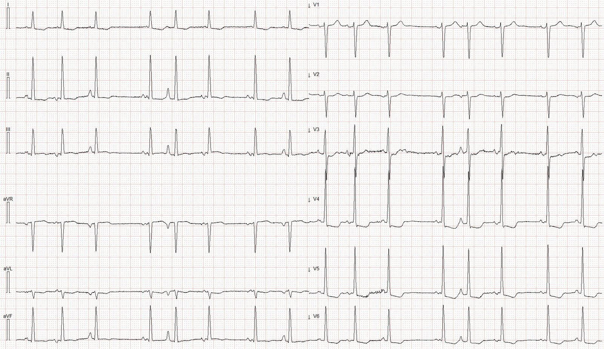
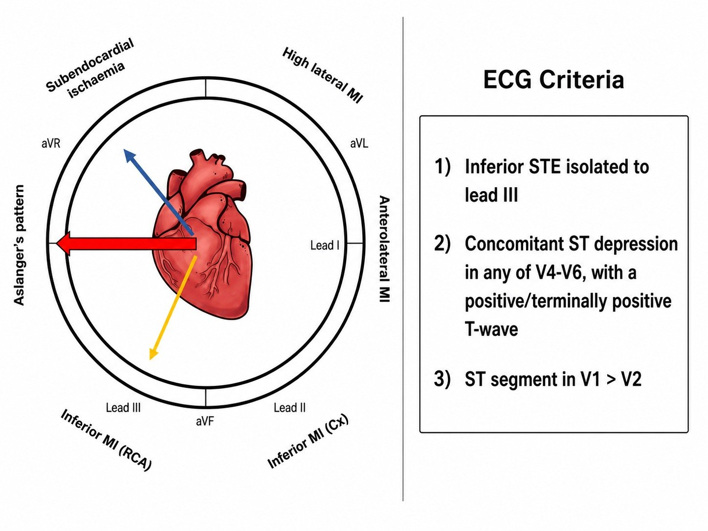
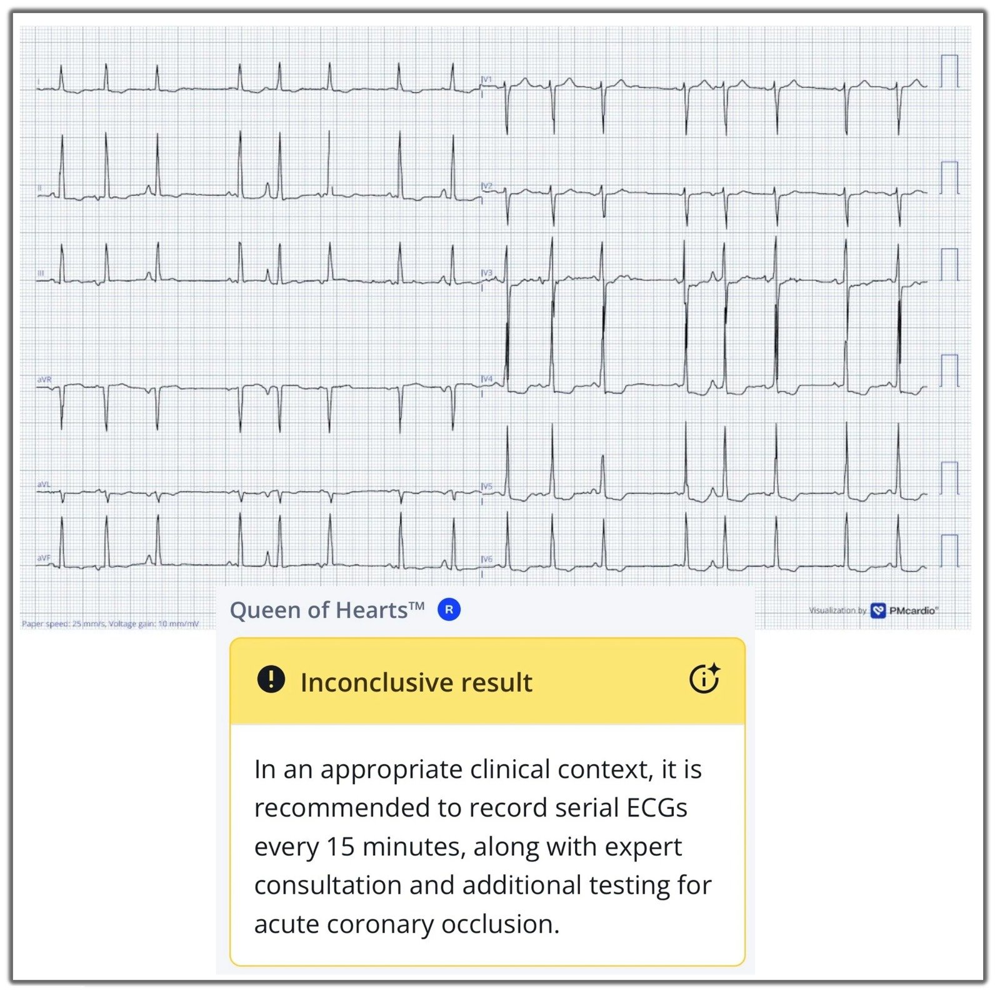
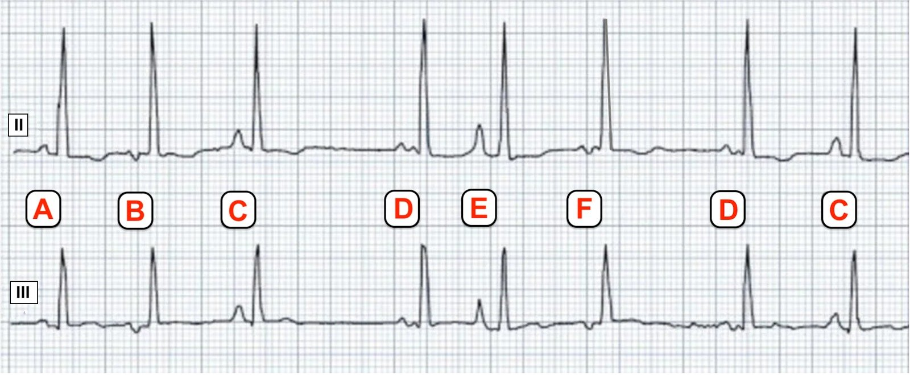
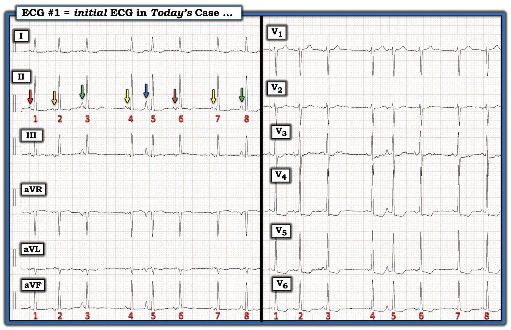
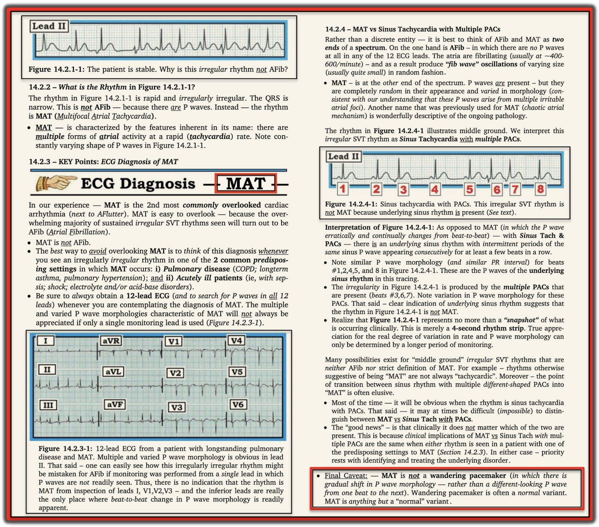
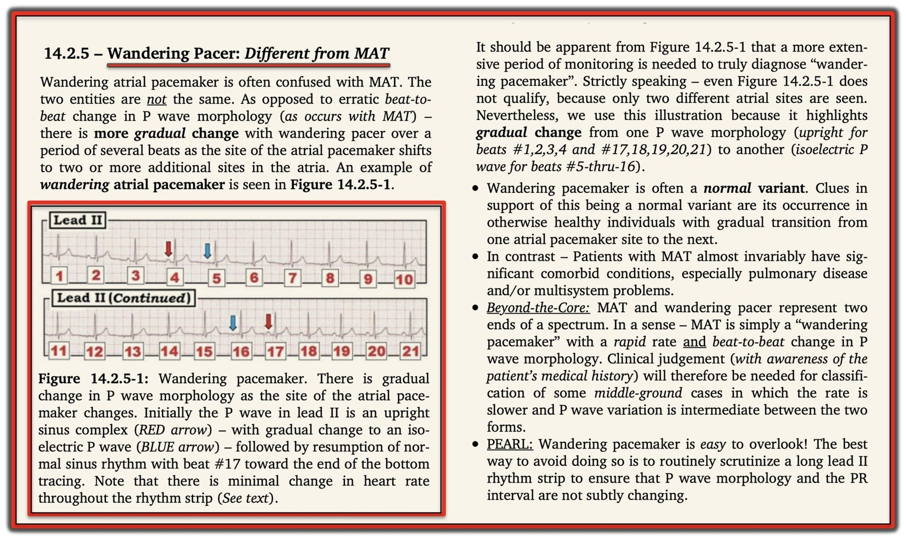

11/10/2026 — Đây là OMI, thiếu máu cục bộ dưới nội tâm mạc, LVH hay phối hợp nhiều thứ?
Bản dịch tiếng Việt của bài "Is this OMI, Subendocardial ischemia, LVH, or some combination?" – Dr. Smith’s ECG Blog. Giữ nguyên toàn bộ 7 hình ảnh và 1 video của bản gốc.
Tác giả: Magnus Nossen.
Một điện tâm đồ được ghi ở một bệnh nhân nam cao tuổi sống tại viện dưỡng lão, được chuyển đến khoa cấp cứu vì khó thở và lú lẫn. Tiền sử bệnh gồm bệnh Alzheimer, tăng huyết áp và bệnh phổi tắc nghẽn mạn tính (COPD). Bệnh nhân ổn định về mặt lâm sàng khi đến viện. Bạn đọc điện tâm đồ dưới đây như thế nào?
Điện tâm đồ #1


Smith: Bạn nghĩ sao?
Có thiếu máu cục bộ dưới nội tâm mạc (subendocardial ischemia) không?
Có OMI và thiếu máu cục bộ dưới nội tâm mạc (SEI) không?
Đây chỉ là LVH thôi sao?
Có phải vừa có LVH vừa có thiếu máu cục bộ dưới nội tâm mạc?
Có đủ cả 3: LVH, SEI và OMI?
Magnus viết tiếp:
Điện tâm đồ này cho thấy một nhịp không đều hoàn toàn (irregularly irregular).
99% trường hợp, một nhịp không đều hoàn toàn là rung nhĩ. Vậy, đây có phải là rung nhĩ không?
Quan trọng hơn: Có bằng chứng điện thế của LVH và đoạn ST chênh xuống ở các chuyển đạo I, aVL và V3–V6. Đoạn ST ở chuyển đạo III thay đổi đôi chút theo hình thái sóng P — nhưng nhìn chung là đẳng điện, có lẽ có một gợi ý kín đáo về ST chênh lên rất nhẹ ở một số nhát.
Gộp lại, các thay đổi ST-T này trong bối cảnh khó thở mới khởi phát gợi ý đáng lo ngại về thiếu máu cục bộ đang diễn ra. Đôi khi có thể khó phân biệt thiếu máu cục bộ dưới nội tâm mạc (SEI) với OMI — và đôi khi các hình ảnh này chồng lấp nhau.
Riêng tôi thấy khó phân biệt rõ ràng hình ảnh Aslanger với SEI. Hình dưới đây cho thấy vectơ ST của hình ảnh Aslanger nằm giữa vectơ ST của SEI và vectơ ST của OMI thành dưới. Điều này giải thích vì sao các hình ảnh này có thể giống nhau.
Hình #1:


Hình 1 cho thấy vectơ đoạn ST (bên trái) và các tiêu chuẩn điện tâm đồ (bên phải) của hình ảnh Aslanger. Hình được phỏng theo Dr. Smith và Life in the Fast Lane.
= = =
Điện tâm đồ #1 không có sóng T dương phần cuối ở V4-V6 và không có ST chênh lên rõ ràng ở chuyển đạo III đạt tiêu chuẩn chính thức. Vì vậy, điện tâm đồ này giống hình ảnh thiếu máu cục bộ dưới nội tâm mạc hơn là hình ảnh Aslanger. Tôi nghĩ nhiều khả năng có SEI chồng lên phì đại thất trái, gây ra các thay đổi ST-T.
Mô hình AI Queen of Hearts (QoH) đã gắn cờ đúng các thay đổi ST-T này là đáng lo ngại về thiếu máu cục bộ, nhưng không kết luận là OMI. Mô hình AI khuyến cáo ghi các điện tâm đồ liên tiếp để theo dõi thay đổi động (dynamic) và diễn tiến thành OMI rõ ràng. Các điện tâm đồ liên tiếp đã không được ghi; siêu âm tim tại giường cũng không được làm.
Hình #2:


Mô hình AI Queen of Hearts xếp điện tâm đồ #1 là “Không kết luận được” (Inconclusive).
Smith: mô hình thử nghiệm của chúng tôi (mô hình gọi tên được các tương đương OMI và các hình ảnh giả OMI, nhưng chưa được phổ biến) cho kết quả:
1) Thiếu máu cục bộ dưới nội tâm mạc 66% và 2) LVH 68%, nhưng không phải OMI.
Điều này cho thấy không đạt ngưỡng nào cho OMI đang diễn ra hay OMI đã tái tưới máu — dù có thể một ngưỡng đã gần chạm điểm cắt chẩn đoán tương ứng. Với bối cảnh lâm sàng của ca hôm nay — kết quả phân loại này thể hiện một tình huống nguy cơ cao, vì thế mô hình khuyến cáo theo dõi lâm sàng sát và đánh giá chẩn đoán thêm.
Do sa sút trí tuệ nặng, bệnh nhân không thể kể bệnh sử một cách đáng tin cậy, nhưng ông phủ nhận đau ngực. Tất nhiên, không có đau ngực không loại trừ được thiếu máu cục bộ. Bệnh nhân được nhập viện với chẩn đoán tạm thời là NSTEMI sau khi hs‑cTnI ban đầu trả về 75 ng/L. Lần đo hs‑cTnI tiếp theo tăng vọt lên 56.420 ng/L, phù hợp với OMI hơn là SEI. Không đo thêm troponin lần nào nữa. Về lâm sàng, bệnh nhân khó thở ngày càng nặng dần, và cuối cùng đã quyết định chuyển sang chăm sóc giảm nhẹ (comfort care).
Smith: SEI thường có hs-cTnI thấp hơn nhiều so với 5000 ng/L, vì vậy tôi nghi ngờ đây thực sự là một ca tắc mạch vành cấp (OMI). OMI có thể kín đáo trên điện tâm đồ đến mức không cho thấy gì cả. Bệnh nhân này chắc chắn có thiếu máu cục bộ kháng trị (dù là SEI hay OMI thì cũng không quan trọng!). Nó được xếp là kháng trị vì các thay đổi ST do thiếu máu cục bộ không hồi phục khi điều trị nội khoa. Thiếu máu cục bộ kháng trị cần kích hoạt phòng thông tim cấp cứu bất kể là OMI hay SEI. Đó là lý do các hướng dẫn châu Âu khuyến cáo chụp mạch vành cấp cứu cho “NSTEMI” khi mức độ nghi ngờ rất cao “bất kể kết quả điện tâm đồ hay dấu ấn sinh học.”
Smith: Tình trạng khó thở cấp chắc chắn có thể do thiếu máu cục bộ cấp, tuy nhiên các dữ liệu được cung cấp chưa đủ để giải thích các triệu chứng.
Trong ca cụ thể này, việc nhận ra các thay đổi trên điện tâm đồ có lẽ cũng không làm thay đổi xử trí, vì người đàn ông cao tuổi này không phải là đối tượng phù hợp để chụp mạch vành. Dù vậy — ý nghĩa lâm sàng của các dấu hiệu trên có thể đã rất khác ở một bệnh nhân có tình trạng chức năng nền tốt hơn.
Bản thân các thay đổi ST-T trong ca hôm nay đã rất thú vị. Nhưng bạn có để ý loại nhịp trên điện tâm đồ hôm nay không? Nếu chưa — hãy xem lại điện tâm đồ #1 ở trên.
= = =
Nhịp trên điện tâm đồ #1 không đều hoàn toàn, với sóng P có hình thái thay đổi. Tôi có thể nhận ra ít nhất 5 hình thái sóng P khác nhau trên điện tâm đồ này. Lời giải thích thường gặp nhất cho hình thái sóng P thay đổi là ngoại tâm thu nhĩ (atrial ectopy). Khi có từ 3 hình thái sóng P khác nhau trở lên trong bối cảnh một nhịp không đều hoàn toàn và tần số tim trên 100 lần/phút — nhịp này được gọi là nhịp nhanh nhĩ đa ổ hay “MAT”. Tuy nhiên, trên bản ghi hôm nay, tần số thất dưới 100 lần/phút.
Hình #3:


Trong Hình #3 này — tôi đã sao lại chuyển đạo II (trên) và chuyển đạo III (dưới) từ điện tâm đồ #1. Các hình thái sóng P khác nhau được đánh dấu bằng các chữ cái A-F. (Lưu ý rằng các hình thái sóng P C và D xuất hiện hai lần. Có thể các hình thái B và F xuất phát từ cùng một ổ nhĩ).
Nhịp trong ca hôm nay sẽ đạt tiêu chuẩn chẩn đoán nhịp nhanh nhĩ đa ổ (MAT) nếu tần số tim nhanh hơn một chút. MAT được định nghĩa là một nhịp trên thất không đều hoàn toàn, tần số trên 100 lần/phút, có ít nhất 3 hình thái sóng P khác nhau, và mỗi phức bộ QRS có một sóng P. Nhịp này thường gắn với bệnh phổi nặng và/hoặc thiếu oxy. Ngưỡng 100 lần/phút là tùy ý và không liên quan đến các yếu tố khởi phát nền. Bệnh nhân của chúng tôi có thể không thỏa tiêu chuẩn chính thức về tần số tim của MAT. Hợp lý khi mô tả nhịp này là nhịp nhĩ lạc chỗ đa ổ (Multifocal Ectopic Atrial Rhythm), có thể xem là thuộc cùng một phổ với MAT, nhưng với tần số tim dưới 100 lần/phút.
Ở những người trẻ tuổi, ngoài ra khỏe mạnh, đôi khi có thể gặp ổ tạo nhịp nhĩ lang thang (wandering atrial pacemaker, WAP). Nhịp này thường được xem là một nhịp lành tính, gắn với tần số xoang lúc nghỉ thấp và trương lực phế vị tăng. Trong WAP thực sự, hình thái sóng P thay đổi từ từ. Điều này khác với nhịp trên điện tâm đồ #1, nơi hình thái sóng P thay đổi đột ngột từ nhát này sang nhát khác.
Suy nghĩ cuối cùng: Tôi nghi ngờ nhịp trong ca hôm nay không liên quan trực tiếp đến tình trạng thiếu máu cục bộ đang diễn ra — mà nhiều khả năng là tình cờ và liên quan đến bệnh COPD nền mà bệnh nhân này đã được biết là có.
(Xem phần bàn luận về nhịp của Ken Grauer trong Bình luận của ông ở bên dưới.)
= = =
Những điểm cần học:
- SEI và OMI có thể khó phân biệt nếu chỉ dựa vào điện tâm đồ, và giữa hai thực thể này thường có phần chồng lấp.
- Các hình ảnh điện tâm đồ nguy cơ cao cần được theo dõi sát và thăm dò lâm sàng.
- MAT thường gặp ở bệnh nhân có bệnh phổi và/hoặc thiếu oxy, và các thay đổi hình thái sóng P diễn ra đột ngột.
- WAP thường là một nhịp lành tính gặp ở những người ngoài ra khỏe mạnh. Trái với MAT — các thay đổi hình thái sóng P trong WAP diễn ra từ từ.
= = =
==================================
BÌNH LUẬN CỦA TÔI, bởi KEN GRAUER, MD (28/7/2026):
Tôi tập trung Bình luận của tôi vào nhịp trong ca hôm nay. Như Dr. Nossen đã nêu — bệnh nhân này đến viện trong một nhịp không đều với tần số chung dưới 100 lần/phút, và với sóng P có hình thái thay đổi.
- Để rõ ràng, trong Hình 4 — tôi đã đánh số các nhát và thêm các mũi tên màu để làm nổi bật các hình dạng sóng P khác nhau trên điện tâm đồ ban đầu hôm nay.
= = =
Nhịp trong Hình 4 …
Chúng tôi đã bàn về thực thể MAT (nhịp nhanh nhĩ đa ổ — Multifocal Atrial Tachycardia) nhiều lần trên Dr. Smith’s ECG Blog (Xem Bình luận của tôi trong các bài ngày 5 tháng Một năm 2020 — và ngày 30 tháng Chín năm 2019, cùng nhiều bài khác).
- Xin nhấn mạnh — cùng 8 nhát được thể hiện ở các chuyển đạo chi và chuyển đạo ngực. Rất khó khẳng định chắc chắn về một nhịp khi mẫu chỉ giới hạn ở 8 nhát.
- Các sóng P đi trước nhát #3 và 8; và đi trước nhát #4 và 7 dường như xuất phát từ cùng một ổ nhĩ (lần lượt là các cặp mũi tên XANH LÁ và VÀNG).
- 4 sóng P còn lại đều khác nhau rõ rệt về hình thái.
- Tôi hoàn toàn không biết hình dạng nào trong 6 hình dạng sóng P khác nhau ở Hình 4 là sóng P “xoang” trong nhịp không đều không theo quy luật này.
= = =
Chẩn đoán phân biệt thông thường cần cân nhắc khi gặp một nhịp trên thất không đều với hình thái sóng P thay đổi gồm: i) Nhịp xoang kèm nhiều PAC; — ii) WAP (ổ tạo nhịp nhĩ lang thang — Wandering Atrial Pacemaker); — và, iii) MAT.
- Nhịp trong Hình 4 quá không đều và không có một hình dạng sóng P xoang nhận ra được để có thể là “nhịp xoang” kèm nhiều PAC.
- Nhịp này cũng không phải WAP — vì với rối loạn đó, vị trí tạo nhịp nhĩ thay đổi từ từ (như trong Bình luận của tôi ở cuối trang của bài ngày 19 tháng Năm năm 2022). Ngược lại — trong Hình 4, chúng ta không bao giờ thấy cùng một hình thái sóng P ở các nhát liên tiếp (Xem PHẦN BỔ SUNG bên dưới để biết thêm về ổ tạo nhịp lang thang).
- Thay vào đó, với sự thay đổi hình thái sóng P và khoảng PR từ nhát này sang nhát kế tiếp — điều này có vẻ gợi ý MAT là nhịp trong ca hôm nay — chỉ có điều tần số thất chung lại không nhanh!
- Một số nhịp tim không đọc sách giáo khoa! Qua nhiều thập kỷ quan sát hiện tượng này — tôi nhận thấy rằng thay vì phân loại trắng-đen rạch ròi cho các nhịp như ổ tạo nhịp lang thang; nhịp xoang kèm nhiều PAC; và MAT — thì các rối loạn nhịp này tạo thành một phổ. (BẤM VÀO ĐÂY — để xem phần bàn luận chi tiết của tôi về chủ đề này).
- Về lâm sàng — nhịp chúng ta thấy trên bản ghi hôm nay diễn biến tương tự MAT, dù không có nhịp nhanh. Đa số bệnh nhân MAT có bệnh phổi lâu năm. Thay vì dùng thuốc chống loạn nhịp — tối ưu hóa chức năng phổi là cách điều trị tốt nhất. Các đặc điểm trong ca hôm nay phù hợp với kết luận của tôi về nhịp hôm nay gồm:
- Bệnh nhân hôm nay có tiền sử COPD — và triệu chứng khiến ông đến viện là khó thở.
- Trong số các hình dạng sóng P ở Hình 4 — có các sóng P nhọn của bất thường nhĩ phải (RAA) (đi trước các nhát #3,5,8) — trong đó sóng P có mũi tên XANH DƯƠNG đi trước nhát #5 rất cao, phù hợp với dấu hiệu "tố cáo" của một bệnh phổi nền đáng kể.
= = =
Suy nghĩ cuối cùng: Trên thực tế — việc cố phân biệt giữa nhịp xoang kèm nhiều PAC có hình dạng khác nhau với MAT vừa mang tính hàn lâm vừa không quan trọng về mặt lâm sàng (cũng như thường là không thể). Đó là vì:
- i) Cùng một bối cảnh lâm sàng thuận lợi là điểm chung của cả hai rối loạn nhịp này; — và,
- ii) Xử trí tối ưu (tức là, xác định và điều trị nguyên nhân nền của rối loạn nhịp) là như nhau cho cả hai tình trạng.
= = =
Hình 4: Điện tâm đồ ban đầu trong ca hôm nay.


= = =
PHẦN BỔ SUNG (về MAT so với ổ tạo nhịp lang thang):
- Video Pearl dài 3:25 phút về MAT.
- Bản tóm tắt 1 trang về MAT (trích từ Grauer K: 2013 ACLS/Arrhythmia ePub).
= = =


- Audio Pearl dài 3:30 phút về ổ tạo nhịp lang thang (Wandering Pacemaker).
- Bản tóm tắt 1 trang về ổ tạo nhịp lang thang (trích từ Grauer K: 2013 ACLS/Arrhythmia ePub).


= = =
= = =